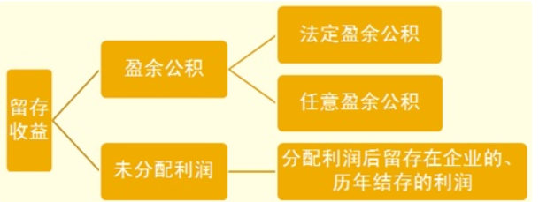

CPA 会计
Table of Contents
- 1. 命题规律总结及趋势预测
- 2. 总论
- 3. 存货
- 4. 固定资产
- 5. 无形资产
- 6. 投资性房地产
- 7. 长期股权投资与合营安排
- 8. 资产减值
- 9. 负债
- 10. 职工薪酬
- 11. 借款费用
- 12. 股份支付
- 13. 或有事项
- 14. 金融工具
- 15. 所有者权益
- 16. 收入、费用和利润
- 17. 政府补助
- 18. 非货币性资产交换
- 19. 债务重组
- 20. 所得税
- 21. 外币折算
- 22. 租赁
- 23. 财务报告
- 24. 资产负债表日后事项
- 25. 持有待售的非流动资产、处置组和终止经营
- 26. 企业合并
- 27. 合并财务报表
- 28. 每股收益
- 29. 公允价值计量
- 30. 政府及民间非营利组织会计
1. 命题规律总结及趋势预测
1.1. 题型
- 客观题
- 单选题
- 双选题
- 主观题
- 计算分析题
- 综合题
{kind=link}
2. 总论
2.1. 财务报告目标
财务报告的目标是向财务报告使用者提供与企业财务状况、经营成果和现金流量等有关的会计信息。 决策有用观 受托责任观
2.2. 会计基本假设
- 会计主体会计主体是指企业会计确认、计量和报告的 空间范围 。 一般来说，会计主体必然 是一个会计主体，但会计主体 不一定 是法律主体。
- 持续经营持续经营是指可预见的将来，企业将会按当前的规模和状态继续经营下去，不会停业，也不会大规模消减业务。 持续经营 是 会计分期 的前提。
- 会计分期会计分期是指将一个企业持续经营的生产经营活动划分为一个个连续的、间隔相同的期间。
- 货币计量货币计量是指会计主体在财务会计确认、计量和报告时一货币作为计量尺度，反映会计主体的生产经营活动。
2.3. 会计基础
- 权责发生制凡是*当期已经实现*的收入和*已经发生或应当负担*的费用，无论款项是否收付，都应当作为当期的收入和费用，计入利润表。
- 收付实现制以收到或支付的现金作为确认收入和费用等的依据。 政府会计中的预算会计 采用收付实现制
2.4. 会计信息质量要求
- 可靠性要求企业应当以 实际发生 的交易或者事项为依据进行确认、计量和报告。 真实可靠、内容完整
- 相关性与投资者等财务报告使用者的经济决策需要相关。以 可靠性 为基础。
- 可理解性清晰明了
- 可比性
- 实质重于形式要求企业应当按照交易或者事项的 经济实质 进行会计确认、计量和报告，不应仅以交易或者事项的法律形式为依据。
- 重要性反映与企业财务状况、经营成果和现金流量有关的所有重要交易或者事项。 eg. 本期发现不重要的前期差错，不进行追溯重述。
- 谨慎性不应高估资产或收益、低估负债或费用。
- 及时性企业对于 已经发生的交易或者事项 ，应当 及时 进行确认、计量和报告， 不得提前或者延后 。
2.5. 会计要素
- 资产 过去的交易或者事项形成的
- 负债 现时义务
- 所有者权益 剩余权益
- 收入 日常活动 总流入
- 费用 日常活动 总流出
- 利润利润=收入-费用+直接计入当期利润的利得和损失等
2.6. “账面价值”与“账面余额”
2.6.1. 固定资产
2.6.2. 无形资产
2.6.3. 投资性房地产
2.6.4. 以摊余成本计量的金融资产
2.6.5. 以公允价值计量且其变动计入其他综合收益的金融资产
2.6.6. 以公允价值计算且其变动计入当期损益的金融资产
2.7. 收入与利得、费用与损失
- 收入与利得与所有者投入资本无关。
- 费用与损失与向所有者分配利润无关。
2.8. 会计要素计量属性
一般应当采用历史成本，某些情况下，为了提高会计信息质量，实现财务报告目标，企业会计准则允许采用重置成本、可变现净值、现值、公允价值计量。
- 历史成本取得资产时是按照取得时的公允价值计量。
- 重置成本盘盈的固定资产等实物资产用 重置成本 计量。
- 可变现净值存货期末按成本与可变现净值 熟低 计量。
- 现值 融资性质的
- 公允价值
- 以公允价值计量且其变动计入其他综合收益的金融资产
- 以公允价值计算且其变动计入当期损益的金融资产
- 采用公允价值模型进行后续计量的投资性房地产
- 现金结算的股份支付确认的莺谷职工薪酬等期末用公允价值计量
3. 存货
3.1. 存货的确认与初始计量
3.2. 发出存货的计量
3.3. 期末存货的计量
3.4. 存货的盘点清查
4. 固定资产
4.1. 固定资产的确认和初始计量
4.1.1. 固定资产的性质和确认条件
- 定义：具有下列特征的有形资产
- 为生产商品、提供了无、出租或经营管理而持有的
- 使用寿命*超过一个会计年度*
- 确认条件
- 与该固定资产有关的经济利益很可能流入企业
- 该固定资产的成本能够可靠地计量
4.1.2. 固定资产的初始计量
- 取得成本
- 企业为构建某项固定资产，是其 达到预订可使用状态前 所发生的可归属于该项固定资产的一切合理必要的之处。
- 购买价款
- 运杂费
- 保险费
- 包装费
- 安装成本
- 外购固定资产
- 购买价款
- 相关税费
- 使固定资产达到预订可使用状态前所发生的可归属于该项资产的运输费
- 装卸费
- 安装费
- 专业人员服务费
- 购入 不需要安装 的固定资产
借：固定资产 应交税费--应交增值税(进项税额) 贷：银行存款 - 购入 需要安装 的固定资产
- 购入时
借：*在建工程* 应交税费-应交增值税（进项税额） 贷：银行存款等
- 安装固定资产
借：在建工程 贷：应付职工薪酬
- 达到预订可使用状态后转入固定资产
借：固定资产 贷：在建工程
- 外购固定资产的特殊考虑
- 没有单独标价 的固定资产，应当按照各项固定资产的 公允价值比例 对总成本进行分配。
- 购买价款超过正常信用条件延期支付，实质上 具有融资性质
借：在建工程 未确认融资费用 贷：长期应付款
未确认融资费用摊销 = 期初应负本余额 x 实际利率 =(期初长期应付款余额 - 期初确认融资费用余额)
- 自行建造固定资产其他方式取得的固定资产的成本
- 自营方式建造固定资产
直接材料、直接人工、直接机器施工费买价、运输费、保险费
盘亏、报废及毁损 盘盈 建设期间 借：在建工程（净损失） 借：工程物资 贷：工程物资 贷：在建工程 自然灾害原因计入*营业外支出* 工程完工后 借：营业外支出（净损失） 借：工程物资 贷：工程物资 贷：营业外收入（净收益） - 其他
- 建造固定资产领用工程物资、原材料或库存商品 实际成本
- 资本化条件的肩宽费用
- 已达到预订可使用状态，但 尚未办理竣工决算
- 暂按 暂估价值
- 办理竣工决算手续后再调整原来的暂估价值，但 不需要调整愿以计提的折旧额
高危行业企业按照国家规定提取的安全生产费
提取安全生产费时 借：生产成本、制造费用 贷：专项储备 使用提取的安全生产费时 (1)属于费用性支出，直接冲减专项储备 借：专项储备 贷：银行存款 (2)形成固定资产的 发生支出时： 借：在建工程 应交税费-应交增值税(进项税额) 贷：银行存款或应付职工薪酬等 达到预定可使用状态时: 借：固定资产 贷：在建工程 借：专项储备 贷：累计折旧（按固定资产入账金额 一次性 计提折旧
在“其他综合收益”和“盈余公积”项目之间增设“专项储备”
- 其他
- 出包方式建造固定资产
- 建筑工程支出
- 安装工程支出
- 建设期发生的，不能直接计入
- 建造工程发成的管理费
- 可行性研究费
- 建设期间发生的工程物资盘亏
- 负荷联合试车费
待摊支出分配率 = 累计发生的待摊支出 / (建筑工程支出 + 安装工程支出 + 在安装设备支出) x 100%
为取得土地使用权而缴纳的土地出让金 属于 无形资产
- 其他方式取得的固定资产
作为前期会计差错处理 : 以前年度损益调整
- 自营方式建造固定资产
- 存在弃置费用的固定资产
借：固定资产 贷：在建工程 *预计负债* 借：财务费用 贷：预计负债 借：预计负债 贷：银行存款
4.2. 固定资产的后续计量
4.2.1. 固定资产折旧
应计折旧 = 固定资产原价 -预计净残值 - 已计提固定资产减值准备累计金额
- 按月计提折旧 固定资产增加，本月不计提，下月计提固定资产减少，本月仍计提，下月不计提
- 提足折旧 后，不再计提折旧
- 固定资产在定期 大修理期间 ，照提折旧。
- 固定资产折方法
- 年限平均法
- 工作量法
- 双倍月递减法
- 年数综合法
4.3. 固定资产的处置
4.3.1. 确认条件（任意之一）
- 该固定资产处于处置状态
- 该固定资产预期通过使用或处置不能产生经济利益
4.3.2. 帐务处理
- 已丧失使用功能 或 因自然灾害发生毁损 : 营业收入
- 出售、转让等原因 ： 资产处置损益
4.3.3. 固定资产的清查
- 盘盈 以前年度损益调整
- 盘亏 营业外支出
| 项目 | 原因 | 处理 |
|---|---|---|
| 存货 | *计量差错*、管理不善的净损失 | 计入管理费用 |
| 工程物资 | 建设期间 盘亏、报废损失（非自然灾害导致）的净损失 | 计入在建工程成本 |
| 完工后 发生盘亏、报废损失的净损失 | 计入营业外支出 | |
| 固定资产 | 当期盘查中盘亏净损失 | 计入营业外支出 |
| 上述资产 | 自然灾害等以外净损失 | 计入营业外支出 |
5. 无形资产
5.1. 无形资产的确认和初始计量
5.1.1. 无形资产的定义与特征
- 定义
- 企业拥有或者控制的没有实物形态的 可辨认 非货币性资产。
商誉的存在无法与企业自身分离， 不具有可辨认性 ，不属于无形资产。
- 内容
- 专利权
- 非专利技术
- 商标权
- 著作权
- 土地使用权
- 特许权
- 确认条件
- 与该无形资产有关的经济利益 很可能 流入企业
- 该无形资产的成本能够可靠地计量
5.1.2. 无形资产的初始计量
- 包括：
- 购买价款
- 相关税费
- 直接归属于该项资产达到预定用途所发生的其他支出
- 使无形资产达到预定用途所发生的专业服务费用
- 测试无形资产使佛能够正常发挥作用的费用
- 不包括：
- 为引入新产品进行宣传发生的广告费、管理费用及其他间接费用
- 无形资产已经达到预定用途以后发生的费用
无形资产的摊销属于
管理费用
- 投资者投入的无形资产的成本
投资合同或协议约定的价值- 政府补助
公允价值- 土地使用权的处理
- 自行开发建造厂房时，土地使用权与地上建筑物分别进行摊销和计提折旧
- 建造对外出售的房屋建筑物，计入
房屋建筑物成本 - 外购房屋建筑物时，在建筑物与土地使用权之间进行分配。*难以合理分配的* ，全部作为 =固定资产=。
- 改变用途的，用于赚取租金或资本增值时，视为
投资性房地产
- (no term)
- 企业合并中取得的无形资产成本 To-note
5.2. 内部研究开发支出的确认和计量
5.2.1. 研究阶段和开发阶段的划分
- 研究阶段
- 计划性
- 探索性
- 开发阶段
- 针对性
- 形成成果的可能性
5.2.2. 开发阶段有关支出资本化的条件
- 完成该无形资产以使其能够使用或出售在技术上具有可行性
- 具有完成该无形资产并使用或出售的意图
- 无形资产产生经济利益的方式
- 证明运用该无形资产生产的产品存在市场或无形资产自身存在市场
- 内部使用的有用性
- 有足够的技术、财务资源和其他资源支持，以完成该无形资产的开发，并有能力使用或出售该无形资产
- 归属于该无形资产开发阶段的支出能够可靠地计量
5.2.3. 会计处理
- 管理费用
- 研究阶段支出
- 开发阶段不符合资本化条件支出
- 无形资产
- 开发阶段符合资本化条件支出
无法区分研究阶段的支出和开发阶段的支出，应将其所发生的研发支出
全部费用化
5.3. 无形资产的后续计量
5.3.1. 无形资产后续计量的原则
- 估计无形资产的使用寿命
- 有限的
年限或者构成使用寿命的产量- 无法预见经济利益期限的
使用寿命不确定
- 无形资产使用寿命的确定
- 源自合同性权利或其他法定权利
- 不应超过 合同性权利或其他法定权利的期限
- 使用资产的 预期的期限短于合同性权利或其他法定权利规定的期限
预期企业使用的期限
- 无形资产使用寿命的复核
- 至少每年年终了 对使用寿命有限的无线资产的 使用寿命及摊销方法 进行 复核
- 使用寿命及摊销方法 不同于以前的估计 应该改变方法 并按照
会计估计变更处理
5.3.2. 使用寿命有限的无形资产
- 摊销期
- 当月增加的无形资产，当月开始摊销
- 当月减少的无形资产，当月不再摊销
- 直线法、产量法
- 无法可靠确定其预期消耗方式的，应当采用
直线法进行摊销 收入法摊销的情况- 企业根据合同约定确定无形资产固定的根本性限制条款
- 有确凿的证据表明收入的金额和无形资产经济利益的消耗是高度相关的
- 无法可靠确定其预期消耗方式的，应当采用
- 会计处理
- 一般应当计入
当期损益（管理费用、其他业务成本等） - 无形资产包含的经济利益是通过 转入到所生产的产品或其他资产实现 的，金额应当计入
相关资产的成本生产成本(直接费用)制造费用(间接费用)
- 待售的无形资产不进行摊销，按照 账面价值 与 公允价值减去出售费用后的净额熟低进行计量
- 一般应当计入
- 一般为零
- 特殊情况
- 有第三方承诺在无形资产使用寿命结束时购买该项无形资产
- 可以根据活跃市场得到无形资产预计残值信息，并且该市场在该项无形资产使用寿命结束时可能存在
- 残值确定至少应于每年年末进行复核，预计其残值与原估计金额不同时，应按照
会计估计变更进行处理。 - 如果 残值重新估计 大于 账面价值 ，则无形资产
不再摊销，直至残值降至低于账面价值时再恢复摊销
- 特殊情况
借：管理费用、制造费用等 贷：累计摊销
5.3.3. 使用寿命不确定的无形资产
在持有期间不需要摊销，但应当在每个会计期间进行 减值测试
借：资产减值损失 贷：无形资产减值准备
5.4. 无形资产的处置
- 无形资产的出售
借：银行存款
无形资产减值准备
累计摊销
贷：无形资产
应交税费-应交增值税（销项税额）
*资产处置损益*
- 无形资产的的出租
其他业务收入或者其他业务成本 - 无形资产的报废
营业外支出
6. 投资性房地产
7. 长期股权投资与合营安排
8. 资产减值
8.1. 资产减值概述
资产减值，是指资产的可回收金额 低于 其账面价值。
- 主要对象：
- 长期股权投资
- 采用成本模式进行后续计量的投资性房地产
- 固定资产
- 生产性生物资产
- 无形资产
- 商誉
- 探明石油天然气矿区权益和井及相关设施等
- 判断原则: 公允价值下降；未来现金流量现值下降。
- 资产减值的测试:
- 资产可回收金额显著高于其账面价值，之后又没有发生消除这一差异的交易或者事项的，资产负债表日可以不重新估计该资产的可回收金额
- 以前报告期间的计算与分析表明，资产可回收金额对于某种减值迹象反映不敏感，在本报告期间又发生了该减值迹象的，可以不因该减值迹象的出现而重新估计该资产的可回收金额。
9. 负债
10. 职工薪酬
11. 借款费用
12. 股份支付
13. 或有事项
14. 金融工具
15. 所有者权益
15.1. 留存收益
